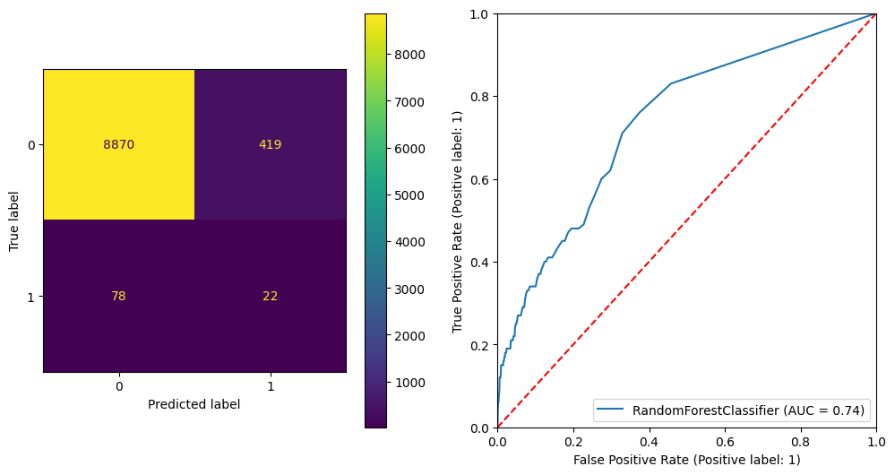
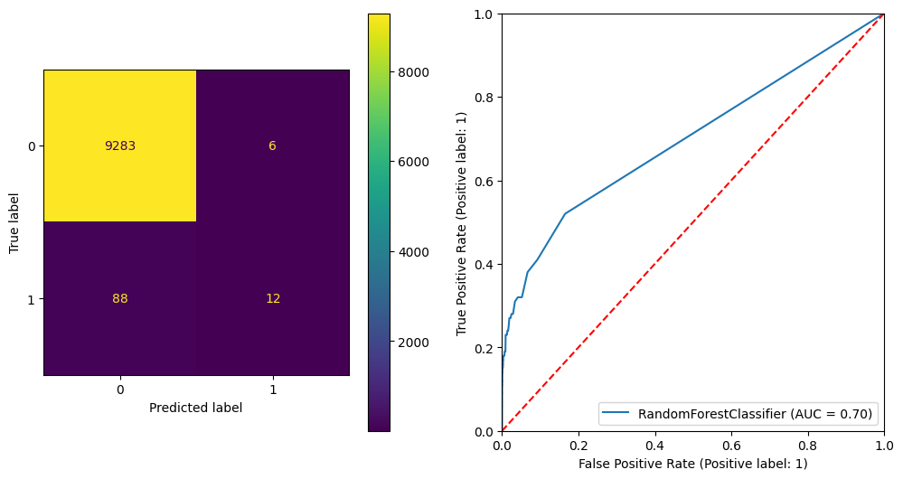

import matplotlib.pyplot as plt
from imblearn.datasets import make_imbalance
from imblearn.over_sampling import SMOTE, BorderlineSMOTE
from sklearn.datasets import fetch_openml
from sklearn.model_selection import train_test_split
from sklearn.ensemble import RandomForestClassifier
from sklearn.metrics import (
roc_auc_score,
confusion_matrix,
classification_report,
ConfusionMatrixDisplay,
RocCurveDisplay,
)
plt.rcParams["figure.facecolor"] = (1, 1, 1, 0) # RGBA tuple with alpha=0
plt.rcParams["axes.facecolor"] = (1, 1, 1, 0) # RGBA tuple with alpha=0Imbalanced Data
Example Dataset
We are going to use a sample of the adult census dataset. For simplicity we will only use numberic features. We will also artificially make it very imbalanced (only ~1% of rows will be positive). The prediction task is to determine whether a person makes over 50K a year.
xs, y = fetch_openml(data_id=1590, as_frame=True, return_X_y=True, parser="auto")
xs = xs.select_dtypes(include="number")
y = y.cat.codesxs, y = make_imbalance(xs, y, sampling_strategy={1: 400}, random_state=1)y.value_counts(normalize=True)0 0.989349
1 0.010651
Name: proportion, dtype: float64xs| age | fnlwgt | education-num | capital-gain | capital-loss | hours-per-week | |
|---|---|---|---|---|---|---|
| 0 | 25 | 226802 | 7 | 0 | 0 | 40 |
| 1 | 38 | 89814 | 9 | 0 | 0 | 50 |
| 2 | 18 | 103497 | 10 | 0 | 0 | 30 |
| 3 | 34 | 198693 | 6 | 0 | 0 | 30 |
| 4 | 29 | 227026 | 9 | 0 | 0 | 40 |
| ... | ... | ... | ... | ... | ... | ... |
| 37550 | 40 | 153372 | 10 | 0 | 0 | 50 |
| 37551 | 40 | 173651 | 10 | 0 | 0 | 40 |
| 37552 | 39 | 192251 | 9 | 0 | 0 | 40 |
| 37553 | 34 | 240252 | 14 | 0 | 0 | 40 |
| 37554 | 34 | 196791 | 12 | 0 | 0 | 25 |
37555 rows × 6 columns
xs_train, xs_test, y_train, y_test = train_test_split(xs, y, stratify=y, random_state=0)y_test.value_counts()0 9289
1 100
Name: count, dtype: int64Baseline Model
rf_classifier = RandomForestClassifier(random_state=42)
rf_classifier.fit(xs_train, y_train)
y_test_preds = rf_classifier.predict_proba(xs_test)[:, 1]
print(classification_report(y_test, (y_test_preds > 0.5).astype(int)))
print(f"ROC AUC Score: {roc_auc_score(y_test, y_test_preds)}")
print(f"Gini Score: {2 * roc_auc_score(y_test, y_test_preds) - 1}")
fig, axes = plt.subplots(1, 2, figsize=(12, 6))
ConfusionMatrixDisplay(confusion_matrix(y_test, (y_test_preds > 0.5).astype(int))).plot(ax=axes[0])
RocCurveDisplay.from_estimator(rf_classifier, xs_test, y_test, ax=axes[1])
axes[1].set_xlim((0, 1))
axes[1].set_ylim((0, 1))
axes[1].plot([0, 1], [0, 1], linestyle="--", color="red")
plt.show() precision recall f1-score support
0 0.99 1.00 1.00 9289
1 0.71 0.15 0.25 100
accuracy 0.99 9389
macro avg 0.85 0.57 0.62 9389
weighted avg 0.99 0.99 0.99 9389
ROC AUC Score: 0.692423296372053
Gini Score: 0.38484659274410604Ways to deal with imbalanced data
Oversampling with SMOTE
SMOTE (Synthetic Minority Over-sampling Technique) is an algorithm designed to address class imbalance in classification problems by generating synthetic samples for the minority class. The main idea behind SMOTE is to create new samples by interpolating between existing minority class samples rather than simply duplicating them. This approach helps improve the classifier’s ability to learn the decision boundary without leading to overfitting, as it introduces more diversity in the minority class.
Here’s a step-by-step overview of how SMOTE works:
For each minority class sample, select
knearest neighbors from the minority class.kis a user-defined parameter.Choose one of the
knearest neighbors randomly.Generate a synthetic sample by interpolating between the selected sample and its chosen nearest neighbor:
synthetic_sample = original_sample + (random_neighbor - original_sample) * random_weightHere,
random_weightis a random number between 0 and 1. The interpolation process creates a new sample along the line segment connecting the two points.Repeat steps 2 and 3 for a user-defined number of synthetic samples per original minority class sample. This parameter is also known as the oversampling percentage or the number of SMOTE neighbors.
Combine the original dataset with the generated synthetic samples to create a new, balanced dataset.
It’s worth noting that SMOTE can be applied in various ways, such as:
- Regular SMOTE: The basic SMOTE algorithm as described above.
- Borderline-SMOTE: Focuses on generating synthetic samples near the decision boundary between the majority and minority classes, aiming to improve the classifier’s performance on borderline instances.
- SVM-SMOTE: Uses an SVM classifier to identify support vectors in the minority class and generates synthetic samples based on the support vectors and their nearest neighbors.
- K-Means SMOTE: Applies K-means clustering to the minority class samples and generates synthetic samples based on the cluster centroids and their nearest neighbors.
When using SMOTE, it’s important to apply the technique only to the training data and not the validation or test data, as doing so could lead to leakage and an overestimation of the classifier’s performance.
Regular SMOTE
X_train_resampled, y_train_resampled = SMOTE(random_state=42).fit_resample(xs_train, y_train)
y_train_resampled.value_counts()0 27866
1 27866
Name: count, dtype: int64rf_classifier = RandomForestClassifier(random_state=42)
rf_classifier.fit(X_train_resampled, y_train_resampled)
y_test_preds = rf_classifier.predict_proba(xs_test)[:, 1]
print(classification_report(y_test, (y_test_preds > 0.5).astype(int)))
print(f"ROC AUC Score: {roc_auc_score(y_test, y_test_preds)}")
print(f"Gini Score: {2 * roc_auc_score(y_test, y_test_preds) - 1}")
fig, axes = plt.subplots(1, 2, figsize=(12, 6))
ConfusionMatrixDisplay(confusion_matrix(y_test, (y_test_preds > 0.5).astype(int))).plot(ax=axes[0])
RocCurveDisplay.from_estimator(rf_classifier, xs_test, y_test, ax=axes[1])
axes[1].set_xlim((0, 1))
axes[1].set_ylim((0, 1))
axes[1].plot([0, 1], [0, 1], linestyle="--", color="red")
plt.show() precision recall f1-score support
0 0.99 0.95 0.97 9289
1 0.05 0.22 0.08 100
accuracy 0.95 9389
macro avg 0.52 0.59 0.53 9389
weighted avg 0.98 0.95 0.96 9389
ROC AUC Score: 0.736138443320056
Gini Score: 0.4722768866401119
Borderline SMOTE
X_train_resampled, y_train_resampled = BorderlineSMOTE(random_state=42).fit_resample(xs_train, y_train)
y_train_resampled.value_counts()0 27866
1 27866
Name: count, dtype: int64rf_classifier = RandomForestClassifier(random_state=42)
rf_classifier.fit(X_train_resampled, y_train_resampled)
y_test_preds = rf_classifier.predict_proba(xs_test)[:, 1]
print(classification_report(y_test, (y_test_preds > 0.5).astype(int)))
print(f"ROC AUC Score: {roc_auc_score(y_test, y_test_preds)}")
print(f"Gini Score: {2 * roc_auc_score(y_test, y_test_preds) - 1}")
fig, axes = plt.subplots(1, 2, figsize=(12, 6))
ConfusionMatrixDisplay(confusion_matrix(y_test, (y_test_preds > 0.5).astype(int))).plot(ax=axes[0])
RocCurveDisplay.from_estimator(rf_classifier, xs_test, y_test, ax=axes[1])
axes[1].set_xlim((0, 1))
axes[1].set_ylim((0, 1))
axes[1].plot([0, 1], [0, 1], linestyle="--", color="red")
plt.show() precision recall f1-score support
0 0.99 0.99 0.99 9289
1 0.16 0.14 0.15 100
accuracy 0.98 9389
macro avg 0.58 0.57 0.57 9389
weighted avg 0.98 0.98 0.98 9389
ROC AUC Score: 0.7377419528474539
Gini Score: 0.47548390569490784Adjusting class weights
The class_weight parameter in RandomForestClassifier is used to adjust the weights of classes during the training process. Assigning higher weights to the minority class helps the classifier pay more attention to these samples, potentially improving its performance on the minority class without needing to resample the data.
There are several ways to use the parameter:
1. None (default)
When class_weight is set to None, all classes have equal weight. This means the classifier does not take class imbalance into account when making predictions.
2. balanced
When class_weight is set to 'balanced', the weights for each class are computed based on the number of samples in each class. The weights are calculated as follows:
class_weight = n_samples / (n_classes * np.bincount(y))
This results in higher weights for minority classes and lower weights for majority classes. Consequently, the classifier will pay more attention to the minority class samples during training.
rf_classifier = RandomForestClassifier(random_state=42, class_weight="balanced")
rf_classifier.fit(xs_train, y_train)
y_test_preds = rf_classifier.predict_proba(xs_test)[:, 1]
print(classification_report(y_test, (y_test_preds > 0.5).astype(int)))
print(f"ROC AUC Score: {roc_auc_score(y_test, y_test_preds)}")
print(f"Gini Score: {2 * roc_auc_score(y_test, y_test_preds) - 1}")
fig, axes = plt.subplots(1, 2, figsize=(12, 6))
ConfusionMatrixDisplay(confusion_matrix(y_test, (y_test_preds > 0.5).astype(int))).plot(ax=axes[0])
RocCurveDisplay.from_estimator(rf_classifier, xs_test, y_test, ax=axes[1])
axes[1].set_xlim((0, 1))
axes[1].set_ylim((0, 1))
axes[1].plot([0, 1], [0, 1], linestyle="--", color="red")
plt.show() precision recall f1-score support
0 0.99 1.00 0.99 9289
1 0.67 0.12 0.20 100
accuracy 0.99 9389
macro avg 0.83 0.56 0.60 9389
weighted avg 0.99 0.99 0.99 9389
ROC AUC Score: 0.6974808913768975
Gini Score: 0.394961782753795
3. balanced_subsample
The balanced_subsample mode is the same as balanced except that weights are computed based on the bootstrap sample for every tree grown.
rf_classifier = RandomForestClassifier(random_state=42, class_weight="balanced_subsample")
rf_classifier.fit(xs_train, y_train)
y_test_preds = rf_classifier.predict_proba(xs_test)[:, 1]
print(classification_report(y_test, (y_test_preds > 0.5).astype(int)))
print(f"ROC AUC Score: {roc_auc_score(y_test, y_test_preds)}")
print(f"Gini Score: {2 * roc_auc_score(y_test, y_test_preds) - 1}")
fig, axes = plt.subplots(1, 2, figsize=(12, 6))
ConfusionMatrixDisplay(confusion_matrix(y_test, (y_test_preds > 0.5).astype(int))).plot(ax=axes[0])
RocCurveDisplay.from_estimator(rf_classifier, xs_test, y_test, ax=axes[1])
axes[1].set_xlim((0, 1))
axes[1].set_ylim((0, 1))
axes[1].plot([0, 1], [0, 1], linestyle="--", color="red")
plt.show() precision recall f1-score support
0 0.99 1.00 0.99 9289
1 0.65 0.13 0.22 100
accuracy 0.99 9389
macro avg 0.82 0.56 0.61 9389
weighted avg 0.99 0.99 0.99 9389
ROC AUC Score: 0.7098584347077188
Gini Score: 0.4197168694154376